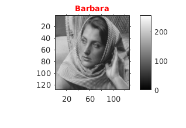
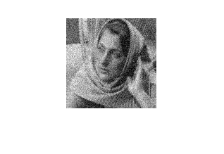
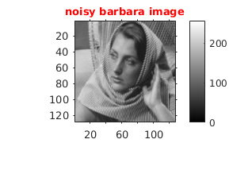
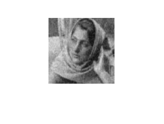
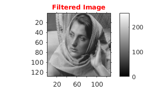
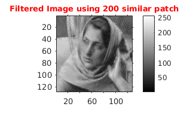

Contents
PCA Based Denoising
tic;
Initialization
file='../data/barbara256.png';
figure('name','Original Image');
scale=1/2;
img=imread(file);
imgResize= imresize(img,scale);
cmGray256=gray(256);
imshow(imgResize,colormap(cmGray256)),daspect([1,1,1]);
title('\fontsize{10}{\color{red}Barbara}'),o1 = get(gca, 'Position');
colorbar(),set(gca, 'Position', o1),axis tight,axis on;

Adding Gaussian Noise to the image
noisyImg=double(imgResize)+randn(size(imgResize)).*20;
figure('name','noisy Image');
imshow(noisyImg,colormap(cmGray256)),daspect([1,1,1]);
title('\fontsize{10}{\color{red}noisy barbara image}'),o1 = get(gca, 'Position');
colorbar(),set(gca, 'Position', o1),axis tight,axis on;
 
a) PCA denoising algo
tic
patchSize=7;sigma=20;
img1=myPCADenoising1(noisyImg,patchSize,sigma);
figure('name','Filtered Image');
imshow(img1,colormap(cmGray256)),daspect([1,1,1]);
title('\fontsize{10}{\color{red}Filtered Image}'),o1 = get(gca, 'Position');
colorbar(),set(gca, 'Position', o1),axis tight,axis on;
 
b) PCA denoising algo using L similar patch
tic
patchSize=7;windowSize=31;L=200;sigma=20;
img2=myPCADenoising3(noisyImg,windowSize,patchSize,L,sigma);
figure('name','Denoised Image uisng 200 similar Patch');
cmGray256=colormap(gray(256));
imshow(img2,cmGray256),daspect([1,1,1]);
title('\fontsize{10}{\color{red}Filtered Image using 200 similar patch}'),o1 = get(gca, 'Position');
colorbar(),set(gca, 'Position', o1),axis tight,axis on;
toc;
Elapsed time is 108.465654 seconds.

b) PCA denoising algo